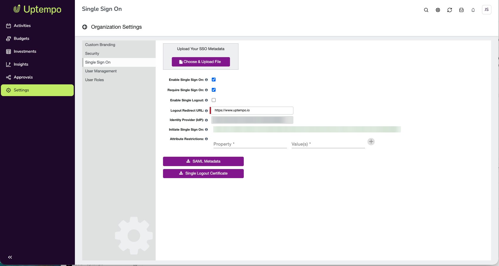

What's new: 2026.11
Discover all the new Uptempo features introduced with the 2026.11 release, available from November 26, 2026.
Campaign Management: Activity approvals
Send approval requests through multiple steps
Approval processes can now route each request through up to five approvers in order, so senior approvers review only what earlier approvers have already signed off on.
Build an approval chain: Add up to five approval steps to a process, name each one (for example, Manager and Director), and choose how its approver is determined.
Approve in order: Each approver sees the request only after the one before approves. The final approval makes the request Approved, and a denial at any point makes it Denied.
Nothing is skipped: When no approver is eligible, the request goes to the default approver instead.
See the route: Submitters see the full approval route before they confirm, and the request's approval history shows who is up now and who is next.
Bulk approvals and emails follow the route: Approving in bulk moves each request forward by one approver, and approvers are emailed when a request reaches them.

Route approval requests by activity owner
Approvers can now be determined by the activity's owner instead of the submitter, so a request reaches the right approver even when a colleague submits it.
Map activity owners to approvers: Upload an activity owner-to-approver mapping (CSV template provided) to route requests automatically.
Routes the same whoever submits: Uptempo records the activity owner when the request is submitted. If the owner changes afterward, the request stays with its original approvers.
Mix sources in one process: Determine approvers by activity owner, submitter, or selected by submitter on different steps of the same process.
Never blocked: A missing, unmapped, or inactive owner sends the request to the default approver.

Guide submitters when their approver isn't listed
When submitters choose their own approver, they can select only users with edit access to the activity. When the approver they need isn't listed, submitters now see what to do next.
Help in the submit dialog: When a search has no match, submitters see a Can't find your approver? message. The message is also available when the search returns results.
Customize the message: Admins can edit the text (up to 300 characters) and add a link, for example to an internal access request form. A preview shows what submitters see.
Default included: Until you customize it, the message explains that approvers need edit access to the activity, and tells submitters to contact their Uptempo administrator. Reset to default restores it.

→ Learn more about customizing the approver not listed message
→ Learn more about submitting when your approver isn't listed
Organization Settings
Require single sign-on
Admins can now require all users to sign in with single sign-on (SSO) with the new Require Single Sign-On option.
Optional, and off by default: With only Enable Single Sign-On selected, users can sign in with SSO or with a username and password.
Enforce SSO: With both options selected, users can no longer sign in with a username and password.
Admins and API users keep password access: Admins can still sign in with a password as a fallback, and API users can still use the client credentials flow to access their data.


Uptempo Public API
Read user access and roles through the API
You can now read who can access which budgets, and with which role, through the Uptempo API, so you can audit access without maintaining your own lookup tables.
Look up a user: Get a user's email, organization roles, and the budgets they can access, with their role on each. Company admins can look up any user. Other users can look up only themselves.
Look up a budget: Get the users on a budget, with their email and role. You need read access to the budget.
Protected by design: A user or budget you can't access returns the same response as one that doesn't exist, so the endpoints can't be used to list records you aren't entitled to see.
Fixes and behavior changes
New activities fill single-option dependent attributes: When you create an activity through the API or an import, and a value on a parent activity leaves only one valid option for a multi-level dependent attribute, Uptempo now fills that option, as the create wizard does. If your request sends the attribute empty, it stays empty.
Exchange rates no longer include calculated columns:
GET /budgets/{budgetId}/column-exchange-ratesnow returns only currency columns. Calculated columns can combine columns with different rates, so they were removed from the response.